Configuring the terminal
How to open the control panel, what each of its four tabs does, and how to finish the setup from your phone. Allow about ten minutes, and keep the admin code to hand.
Open the control panel
Start from the sale screen, the one with the keypad and the Charge button.
Find the small grey bar at the very bottom edge of the screen. Put your finger on it and slide it upwards, towards the keypad.
The admin code screen slides up from the bottom.
Note
The swipe has to start on the bar itself. A swipe that starts on the keypad does nothing.

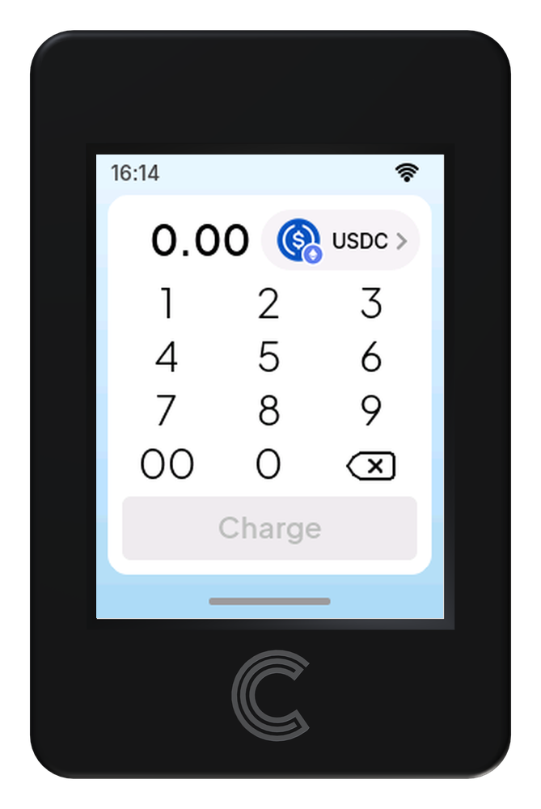
Slide the bottom bar up
Enter the admin code
Type the admin code on the keypad. Each digit appears as a dot.
Tap the eye icon if you want to check what you typed.
Use ⌫ to delete the last digit.
Tap ✓ to confirm.
The ‹ arrow next to Control panel takes you back to the sale screen without opening anything.
Note
The admin code is the one created when the terminal was first set up. It is only ever typed on the terminal itself, never on a phone or computer. After three wrong attempts, each one doubles the wait before the next, even across a restart, up to an hour.

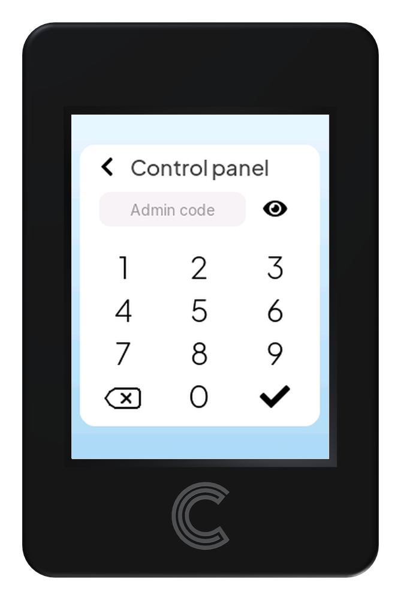
Empty field

Code entered, tap ✓
The four tabs: Screen, Wi‑Fi, Tx, About
The control panel has four tabs along the top. Tap a tab name to switch. Close returns to the sale screen.
Screen — Display settings
This is the only tab you configure entirely on the terminal.
Setting |
What it does |
|---|---|
Brightness |
Drag the slider left or right. The percentage on the right updates as you go. |
Touch |
Tap Calibrate the panel if taps land in the wrong place, then follow the targets on screen. |

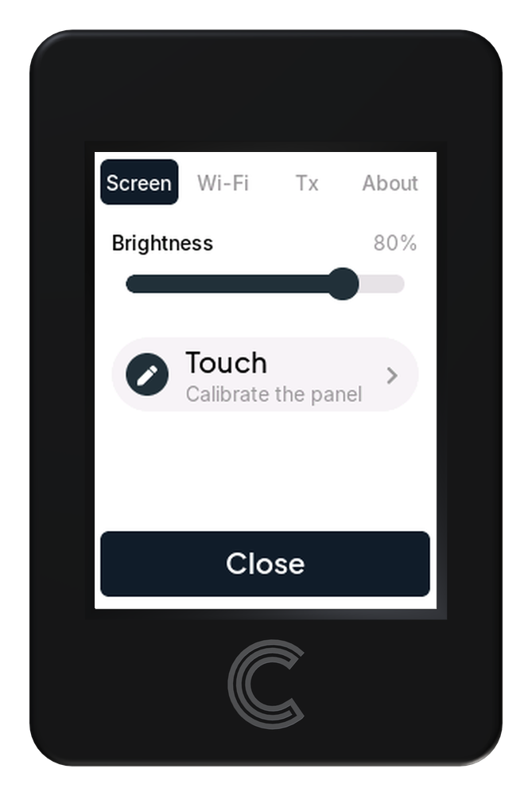
Wi‑Fi — Network connection
Setting |
What it does |
|---|---|
Network |
The Wi‑Fi network the terminal is connected to now. |
Signal |
How strong that network is, from Weak to Excellent, with the reading in dBm. |
Configure |
Opens the phone setup page, where you pick another network and type its password. See Wi‑Fi under Configure in the browser. |

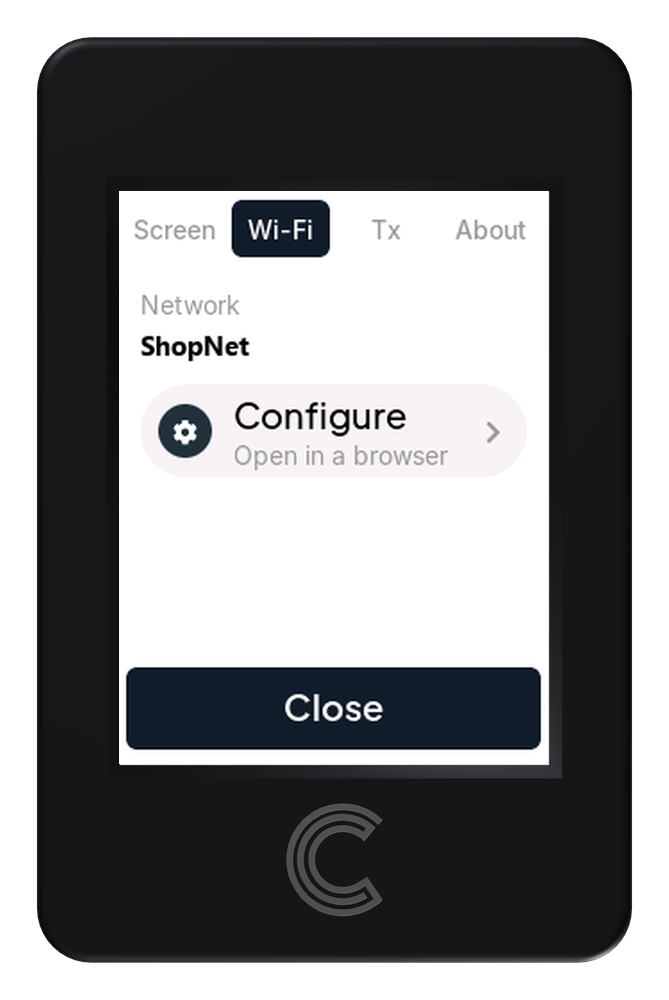
Tx — Transaction details
What the terminal charges in and where the money goes. This tab is read‑only and scrolls.
Setting |
What it does |
|---|---|
Asset |
Tap the top row (here USDC · Ethereum Sepolia) to view another asset’s details. |
Contract |
The token contract the terminal uses for that asset. |
Send to |
Your payout address. Every sale is paid here. |
Max fee / Priority fee |
The most the terminal pays per unit of gas on Ethereum and Polygon, in Gwei. Not shown for a Tron asset, which has no such setting. |
Configure |
At the bottom of the list. Opens the phone setup page to change any of the above. |

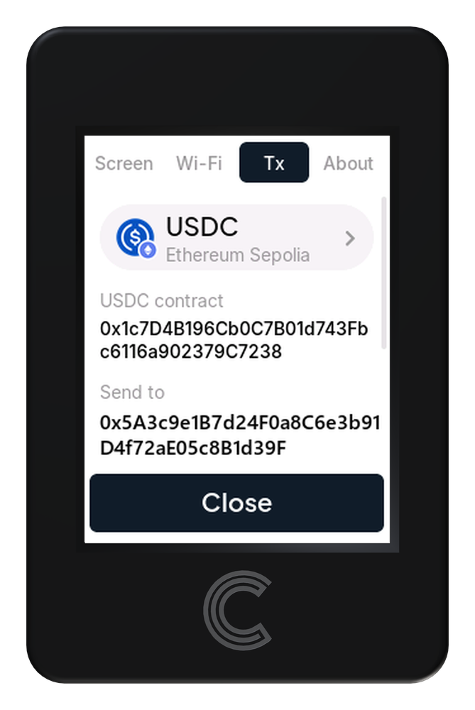
Top

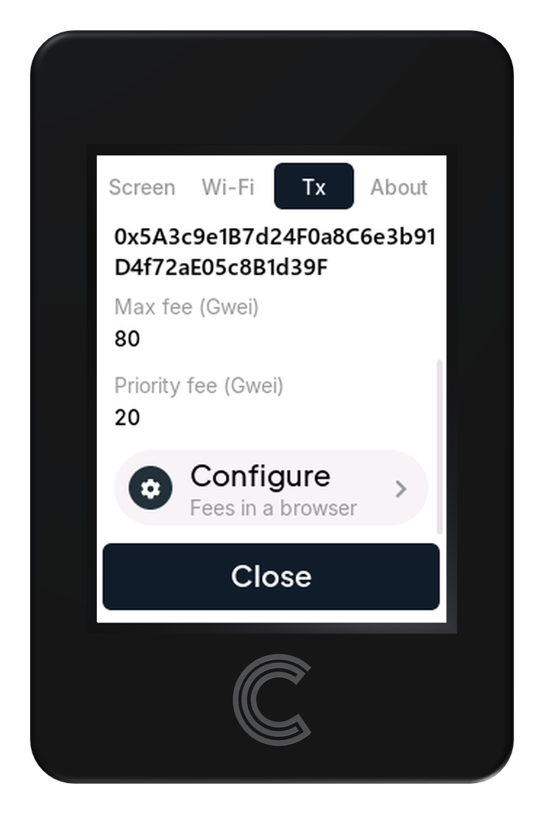
Scrolled down
About — Version, update and reset
Setting |
What it does |
|---|---|
Version |
The firmware the terminal runs, for example |
Update |
Opens the phone setup page to install new firmware. |
Reset |
Erases everything the terminal has stored and restarts into first-time setup. The terminal asks you to confirm first. |

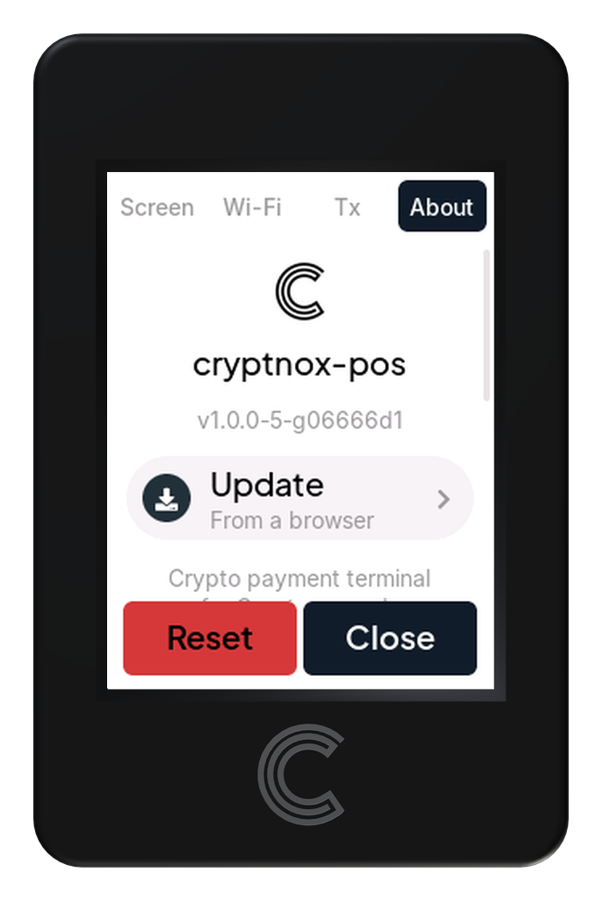
Warning
Reset leaves nothing behind. It is not limited to Wi-Fi, brightness and gas fees: the admin code, the payout addresses, the token contracts and the production-or-test choice go with them. The terminal comes back up as it left the factory and has to be set up from scratch, card included.
Important
Three buttons, one destination The buttons in Wi‑Fi, Tx and About have different labels but do exactly the same thing: they start the terminal’s own Wi‑Fi so you can finish the job on your phone. Whichever one you tap, you land on the same page, with every setting on it.
Connect your phone to the terminal
After you tap one of the three buttons, the terminal shows a QR code and the name and password of its own Wi‑Fi network, named Cryptnox-XXXX.
Open your phone’s camera and point it at the QR code. Accept the offer to join the network. No camera? Join
Cryptnox-XXXXin your phone’s Wi‑Fi settings and type the password shown on the terminal.The phone opens a sign‑in window titled Connect to Cryptnox‑XXXX (address
192.168.4.1). If it doesn’t, openhttp://192.168.4.1/in a browser.The page asks you to authorize this browser. Look at the terminal: it asks for the admin code again and shows a four‑digit browser number.
Check that the number on the terminal matches the one on your phone, then enter the admin code on the terminal.
Warning
While the page is open, the terminal leaves the shop’s Wi‑Fi and cannot take payments. The page closes on its own after 15 minutes.
Note
If the numbers don’t match, another device is trying to connect. Don’t enter the code; tap Done and start again.

The setup page on your phone
Configure in the browser
The page is one long scroll of sections. Change only what you need; each section has its own save button. Anything that decides where money goes must then be accepted on the terminal’s screen.
Network
Choose between Production (Ethereum, Polygon, Tron, real money) and Test (Sepolia, Amoy, Nile, worthless test tokens for trying the terminal out). Select one and tap Switch network.
Note
The terminal restarts when the network changes. Check the asset on the Tx tab afterwards.

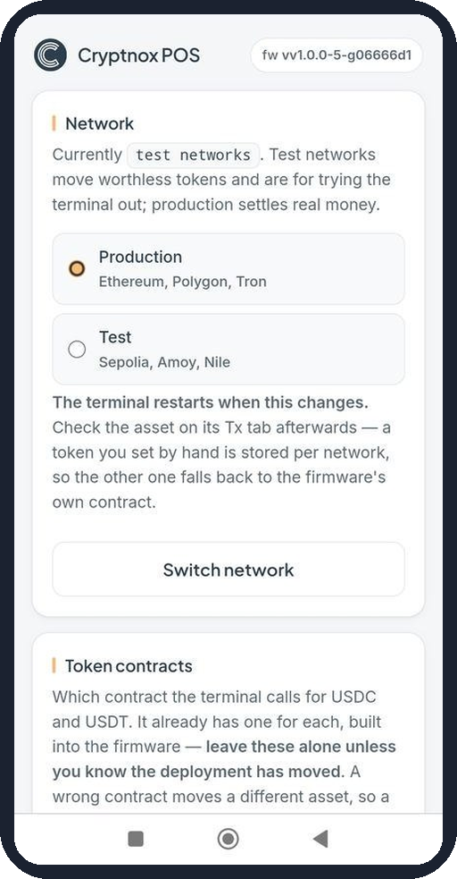
Token contracts
Two fields: ERC‑20 replaces the USDC contract on Ethereum, TRC‑20 replaces the USDT contract on Tron. Every other token keeps the contract built into the firmware, which already has the right ones.
Warning
Leave these alone unless you know the token’s deployment has moved. A wrong contract moves a different asset. A new contract must be accepted on the terminal screen.

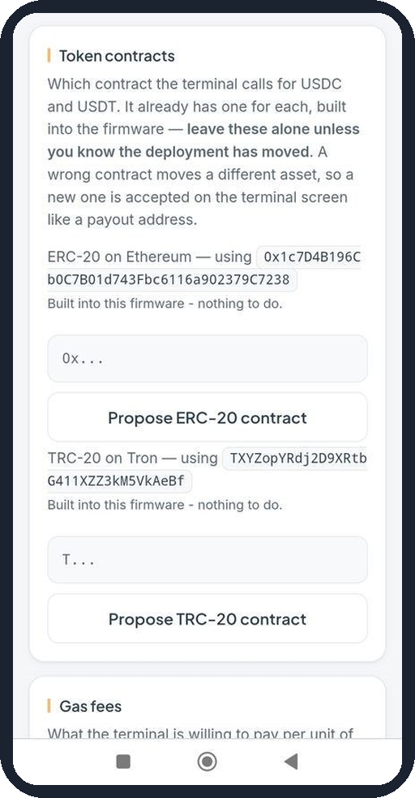
Gas fees
The most the terminal will pay per unit of gas on Ethereum and Polygon, in Gwei.
Tap Save gas fees. The new values apply from the next sale.
Setting |
What it does |
|---|---|
Max fee |
Upper limit per unit of gas. |
Priority fee |
The tip to validators. Capped by the max fee. |

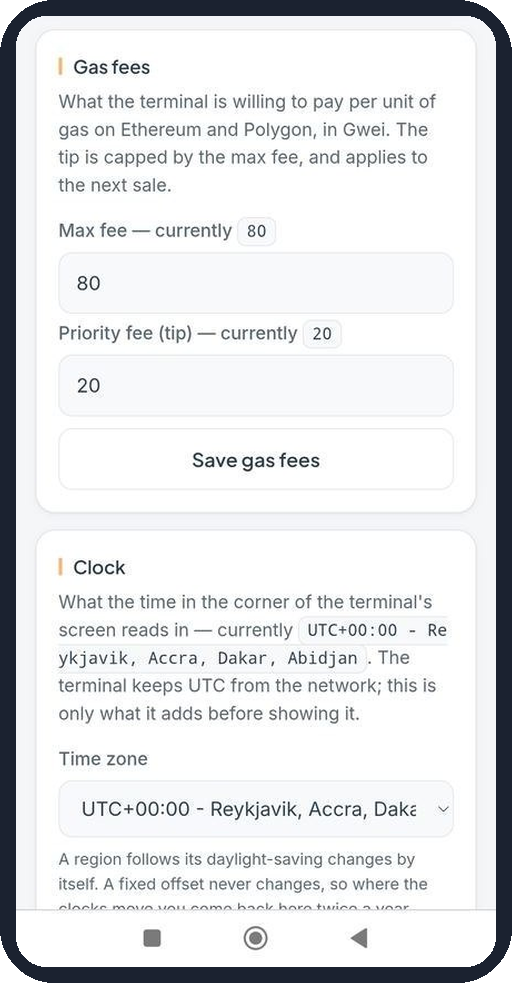
Clock
Sets the time zone for the clock in the corner of the terminal’s screen. Pick your region in the Time zone list and tap Save clock.
Note
Entries marked EU DST, US DST, AU DST or NZ DST follow that region’s daylight‑saving changes automatically. A fixed offset never changes, so you would have to come back twice a year.

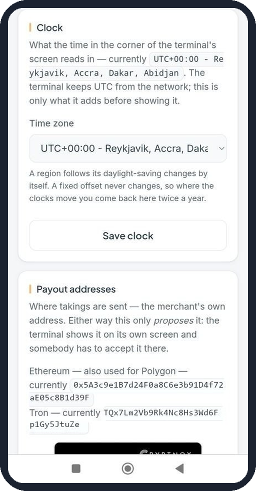

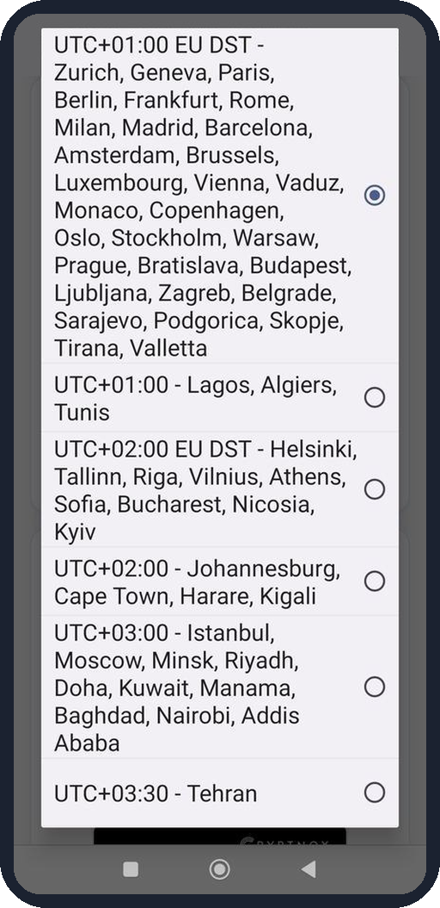
Payout addresses
Where takings are sent. There are two ways to set them:
Read from a Cryptnox card. Tap the button. The terminal asks for the card’s PIN first, on its own keypad; only then do you hold the merchant’s card against the reader. The card’s own addresses become the payout addresses.
Type an address. One Ethereum address (also used for Polygon) and one Tron address, each with its own Propose button.
Warning
Either way, the phone only proposes the address. The terminal shows it on its own screen, and you must tap Accept there. Check it character by character before you do.

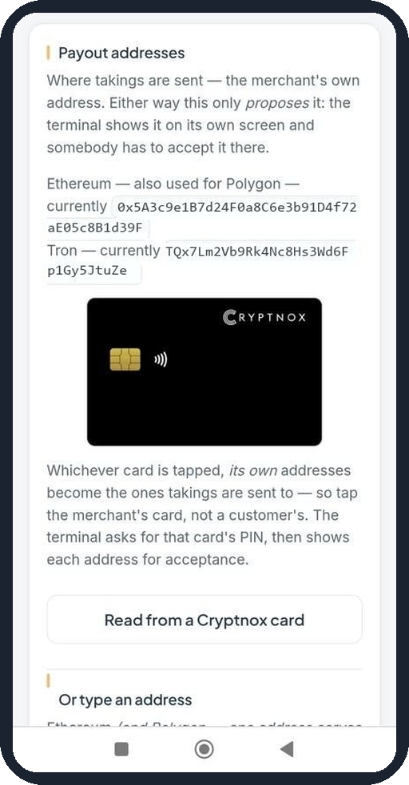

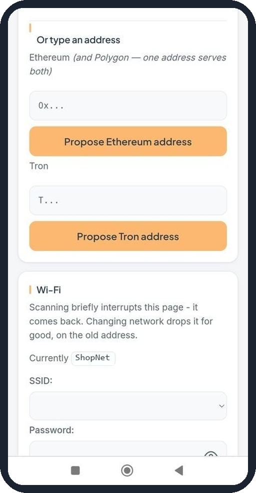
Wi‑Fi
Connects the terminal to the shop’s network.
Open the SSID list and choose your network. The number in brackets is signal strength: closer to zero is stronger.
Type the network password.
Tap Join this network.
Note
Tap Scan again if your network is missing; the page drops for a moment and comes back. Once the terminal joins the new network, this page disconnects for good.

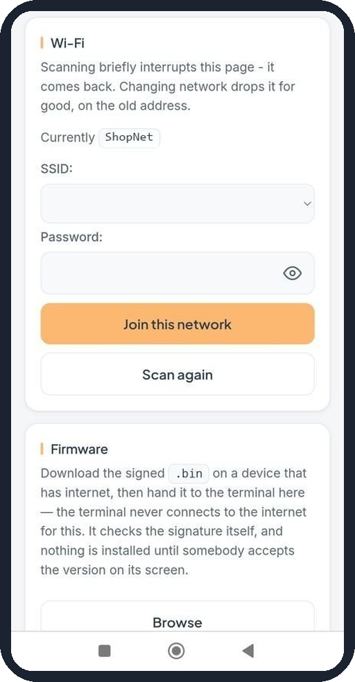

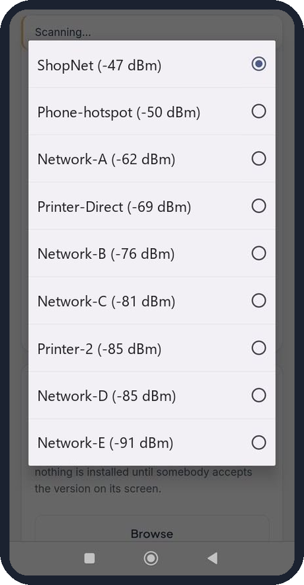
Firmware
Installs a firmware update. The terminal never downloads it itself.
On a device with internet, download the signed
.binfile.Tap Browse and choose the file.
The terminal checks the signature, then shows the new version. Accept it on the terminal to install.
Warning
Browse does nothing? The phone’s Wi‑Fi sign‑in window can’t pick files, on Android or iOS. Stay on the Cryptnox-XXXX network, open http://192.168.4.1/ in your normal browser and use the Firmware section there.

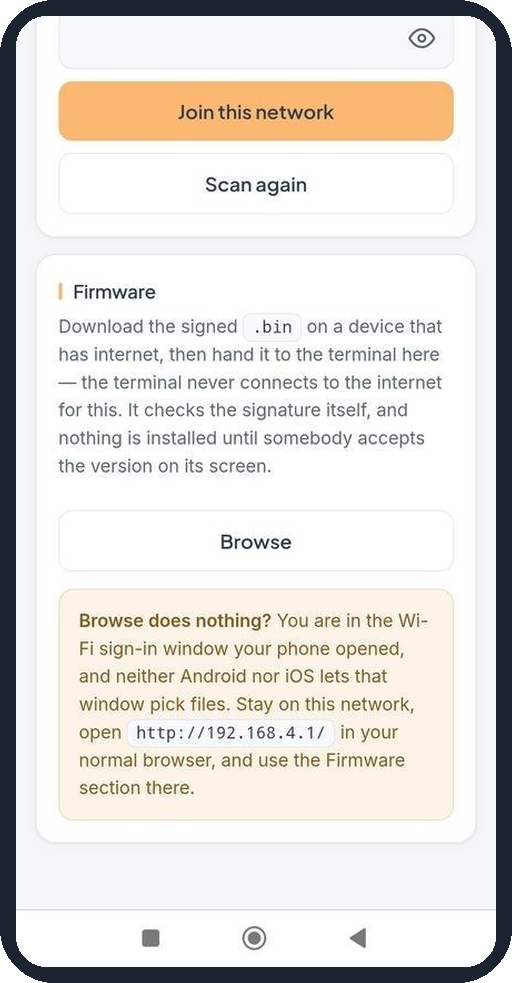
Close the session
Some changes end the session by themselves:
Accepting an address or contract on the terminal, or switching the network, restarts it to apply the change (Applying settings).
Joining a new Wi‑Fi network closes the page and returns the terminal to the sale screen.
Otherwise, when you’re finished, tap Done on the terminal. Its own Wi‑Fi switches off, it reconnects to the shop’s network, and the page on your phone stops working. Tap Close to leave the control panel and return to the sale screen.
Before taking real payments, open the Tx tab once more and check the payout address.
Note
If you forget, the session ends on its own after 15 minutes.
Note
Screens from Cryptnox POS firmware v1.0.0-5-g06666d1. Payout addresses and Wi‑Fi network names in the screenshots are placeholders.